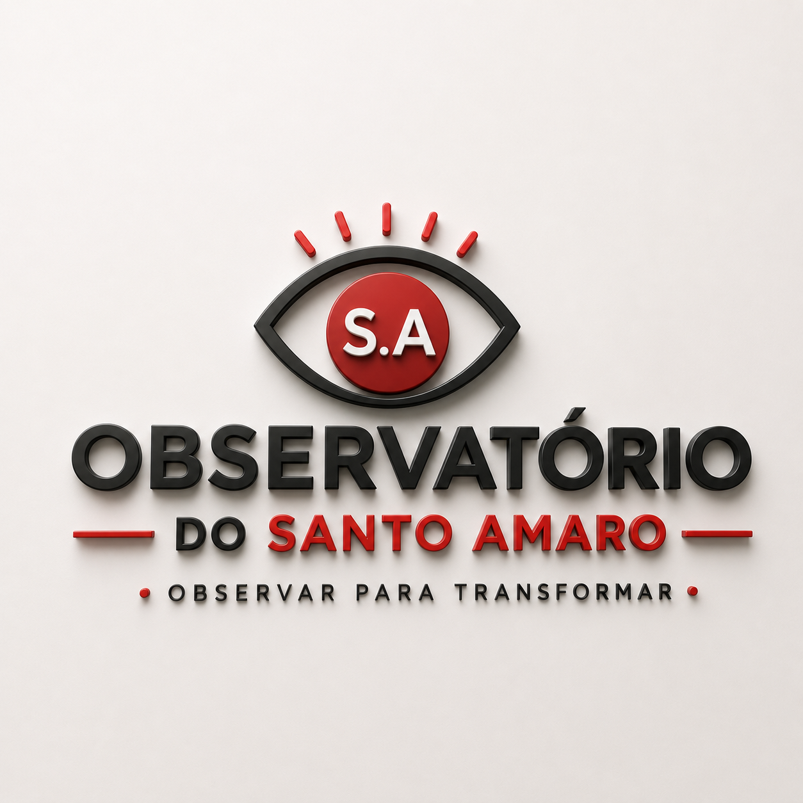

Levantamento de dados e pesquisa que subsidiam todas as nossas ações e dão visibilidade à comunidade.
Criado no final de 2023, o Observatório é o núcleo de pesquisa do AME. Ele coleta e divulga dados socioeconômicos, sociodemográficos e cartográficos sobre o Morro Santo Amaro.
O incentivo para sua criação foi a escassez de informações sobre os moradores e a área. O núcleo é formado por moradores e por pesquisadores de diversas universidades — alguns conduzindo pesquisas de doutorado sobre o território —, o que enriquece o material gerado e disponibilizado a todos.
Mais do que reunir dados, o Observatório se compromete a publicá-los em diferentes formatos, tornando-os acessíveis e conscientizando os moradores sobre a importância dessas informações e sobre seus direitos.